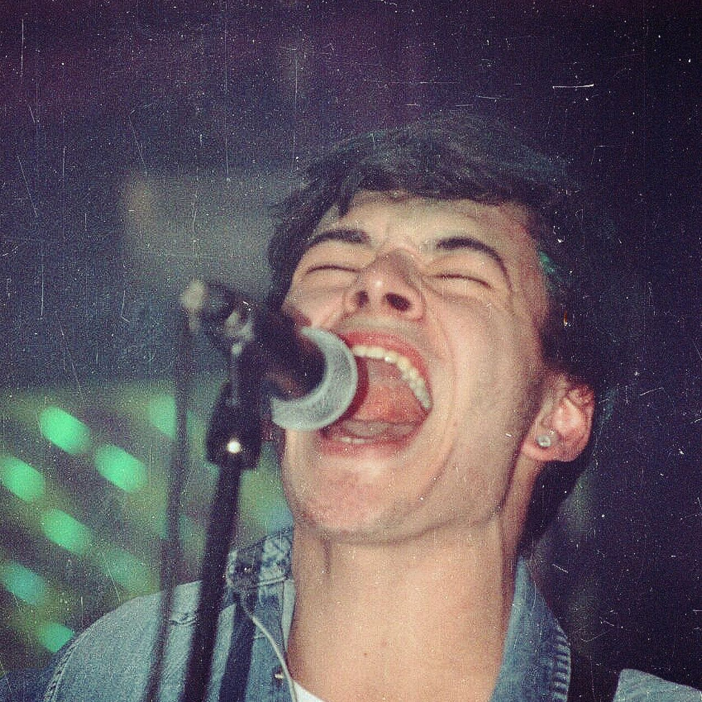
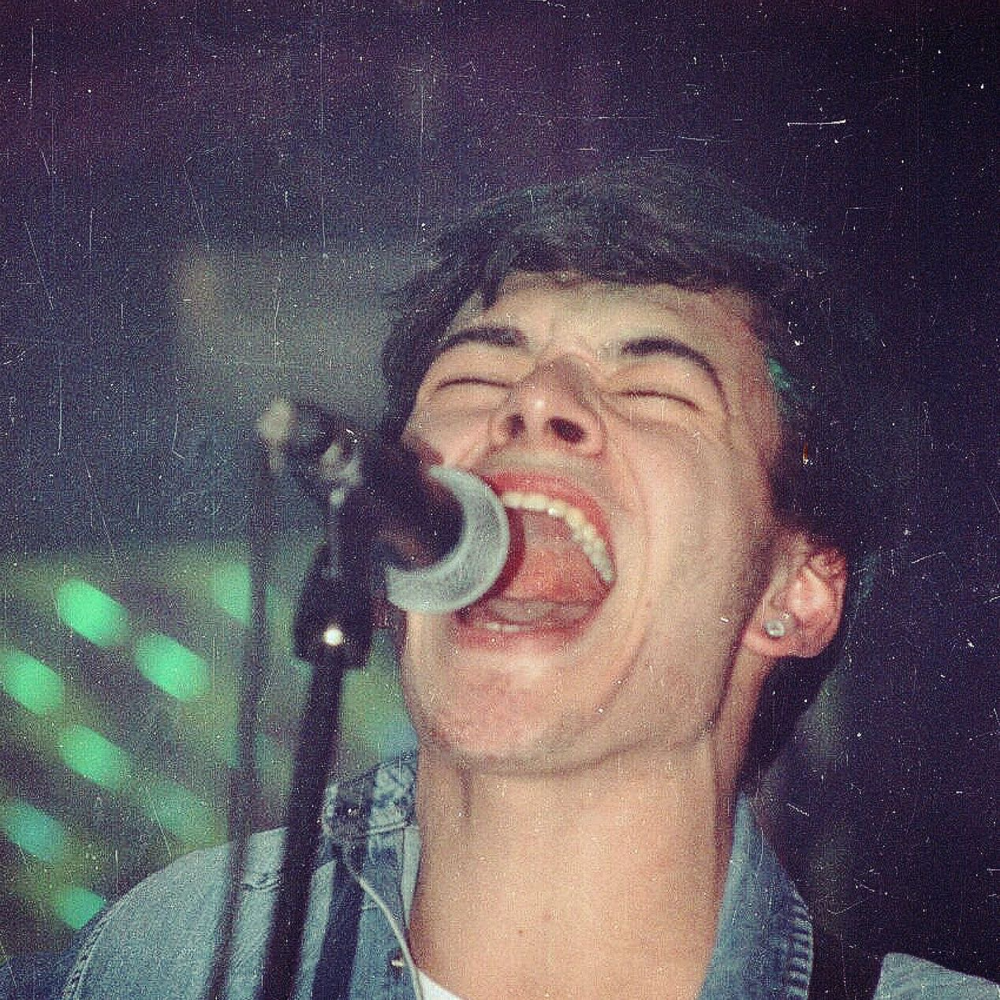

16 de Septiembre de 2025.
Vinilo en Blanco nació en 2015 en Villa Regina como un proyecto escolar que rápidamente se convirtió en algo más. La incorporación de Pichu como baterista y vocalista, junto a Ariel en guitarra e Ixi en bajo, consolidó una formación que pronto descubriría su química única. El trío comenzó a forjar una identidad propia y a enamorar al público local con su energía.
En 2016 lanzaron su primer demo, Dicen, un tema que reflejaba su impulso por seguir sus sueños pese a las críticas. Entre shows el trío fue ganando reconocimiento y experimentando con su sonido: Pichu animó a Ixi a cantar en vivo por primera vez, mientras Ixi empezó a desarrollarse como productor, aprendiendo a grabar y moldear el sonido del grupo, y Ariel ampliaba su sonoridad con la primera pedalera que la banda le regaló.
Sin embargo, el crecimiento también trajo tensiones. Para 2019, diferencias creativas y conflictos personales provocaron su separación, un golpe que cada uno vivió de manera distinta. La pandemia permitió transitar esa pausa, mientras Ariel e Ixi intentaban reconstruir la química original sin éxito. La distancia les enseñó la importancia de escucharse y respetar los tiempos de cada uno.
En 2023, el reencuentro fue la chispa de una nueva etapa. Con madurez y amistades reparadas, la banda retomó su camino con una visión clara: crear con libertad y dejar un legado artístico. En 2024 lanzaron Héroes, marcando su regreso, y hoy trabajan en su primer álbum, con un sonido indie rock potente y letras profundas. Vinilo en Blanco sigue siendo un trío de amigos haciendo música auténtica, independiente y con la pasión intacta que los unió desde el principio.
Vinilo en Blanco: la banda indie rock de Villa Regina que renació en 2024 (Medium.com)